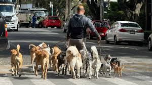
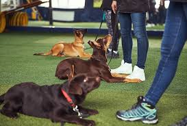
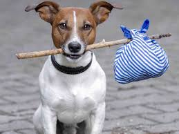

Control canino humanitario enfocado en la recolección segura, rehabilitación y adopción responsable de perros callejeros en Sahuayo, Michoacán.
Captura segura de perros callejeros por personal capacitado.

Trabajo conductual para reducir agresividad y fomentar convivencia.

Procesos de castración responsables y apoyo veterinario.

Vinculación con familias responsables o refugio digno.
